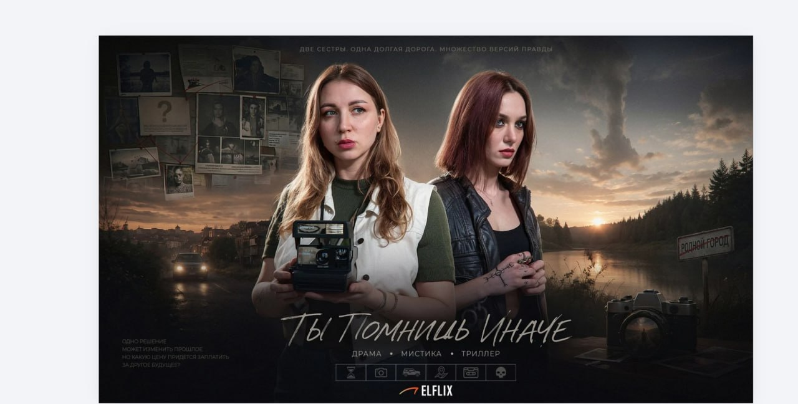
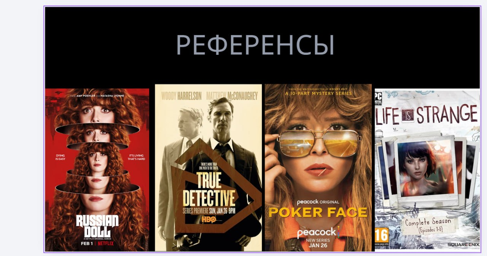
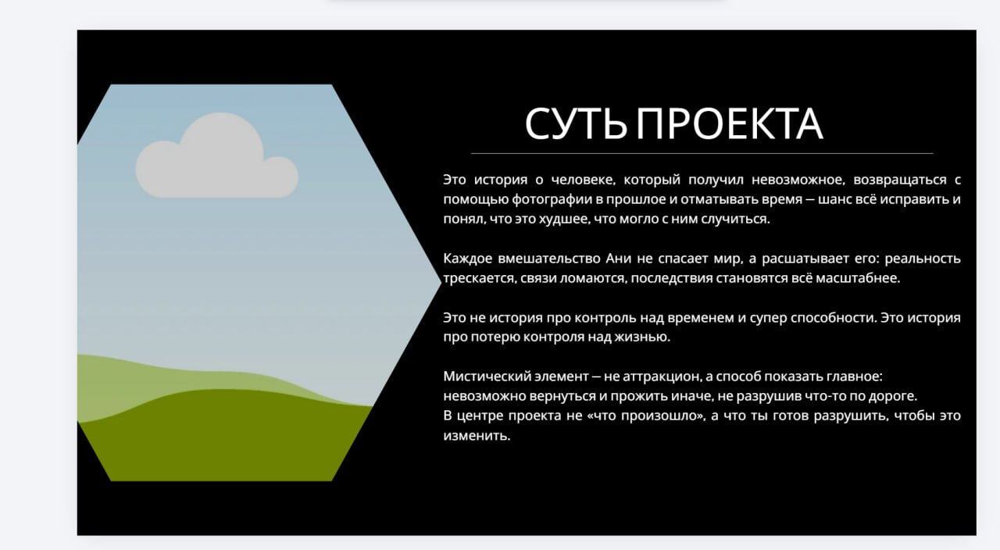
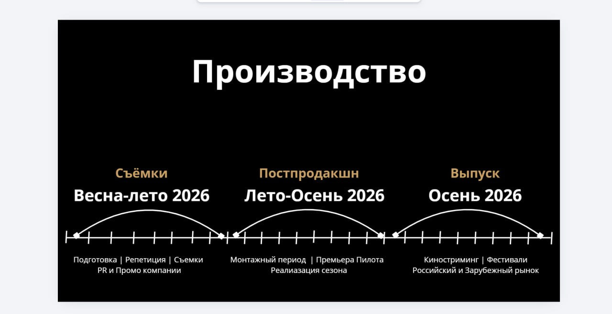

Когда AI уже недостаточно
Иногда проблема не в том, что нейросеть «не может». Проблема в том, что между «сделать красивую картинку» и «собрать настоящий проект» лежит огромная разница.

Проект
«Ты помнишь иначе»
Мистический драматический триллер о девушке, которая получает возможность возвращаться в прошлое через старые фотографии.
Но каждое вмешательство делает реальность хуже. Память перестаёт быть доказательством.
Это не история про контроль над временем. Это история про цену второго шанса.
Что было сделано
moodboard, cinematic atmosphere, visual storytelling, poster language, tone references.
key visuals, atmosphere generation, poster compositions, cinematic scene building.
логлайн, визуальный язык, драматическое ядро, структура проекта, pitch logic.
Референсы и визуальный язык
Проект собирался на пересечении mystery-drama, provincial noir, broken memory и ощущения альтернативной версии реальности.


Что показал этот проект
- атмосферу
- cinematic frames
- poster visuals
- mood generation
- art direction
- visual system
- pacing
- creator instinct
Где заканчивается «просто AI», там начинается visual direction.
Production logic
Даже концептуальная презентация должна выглядеть как проект, у которого есть маршрут: от идеи и визуального языка до продакшна и выхода.


HB Signature
HB — не просто watermark. Это media-symbol проекта: ироничный, cinematic, немного underground. Подпись независимого digital creator brand.